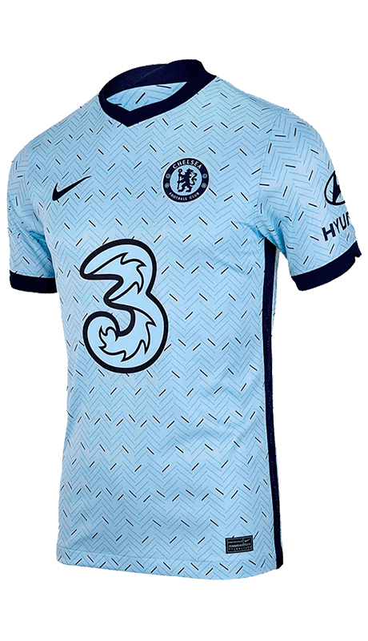
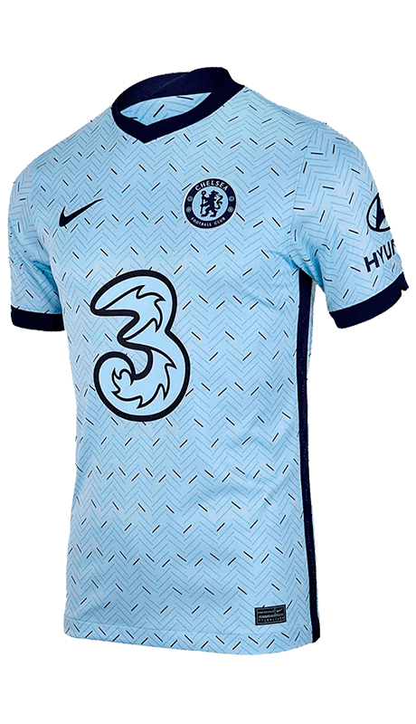

El Stamford Bridge es un estadio de fútbol en el distrito de Hammersmith y Fulham, en Londres, Inglaterra, y es el hogar del Chelsea Football Club. El estadio se encuentra ubicado en el área urbana de Walham Green y es apodado como The Bridge
por los seguidores del club.
La capacidad del estadio es de 41.841 espectadores, lo que lo convierte en el décimo estadio con mayor capacidad de la Premier League. Inaugurado en 1877, el estadio fue inicialmente construido para que
fuera utilizado por el Fulham, pero este no aceptó, lo que obligó a fundar un equipo de fútbol específico, el London Athletics Club, que lo usó hasta 1905, cuando el nuevo propietario Henry Augustus Mears refundó el mencionado equipo con
el nombre de Chelsea Football Club. El Chelsea ha jugado como local en este estadio desde aquel entonces.


 

Stamford Bridge es uno de los estadios de fútbol más antiguos de toda Inglaterra y es la casa del Chelsea FC desde nuestra fundación en 1905. Abrió sus puertas el 28 de abril de 1877 a cualquier deporte que lo necesitara. Por aquel entonces, el atletismo era la prioridad. Durante los primeros 27 años fue utilizado casi exclusivamente para la tradición popular victoriana de hacer reuniones entre los atletas, organizadas por el London Athletic Club. Pero en 1904 cambiaron los dueños del terreno y la historia de Stamford Bridge cambió para siempre. Henry Ausgustus Mears y su hermano, J.T. Mears, tenían el deseo de albergar el deporte del cual se habían enamorado y que estaba creciendo abruptamente por todo Londres: el fútbol. Para eso, además de hacerse con las tierras, adquirieron un terreno adicional que solía ser un mercado. El nuevo estadio fue diseñado por el famoso arquitecto y especialista Archibald Leicht. El escocés le dio su toque a la tribuna principal, la East Stand de 120 yardas y en la que entran 5.000 espectadores: un techo a dos aguas que era el factor distintivo de Stamford Bridge por aquel entonces.
El nuevo estadio debutó con una victoria 4-0 en un amistoso frente al Liverpool, en septiembre de 1905, y fue acompañado por el primer programa gráfico que acompañó un partido en Londres: cuatro páginas enteras que sirvieron como empujón para el entusiasmo de la ciudad por el fútbol. El éxito vino sorpresivamente rápido: el partido con Manchester United en Viernes Santo significaba un choque crucial que terminó con 67 mil personas en la cancha. El ascenso a la Primera División se logró en 1907 y durante la siguiente campaña los recientemente apodados "Los Pensioners" rompieron récords de cantidad de espectadores en Gran Bretaña. Incluso uno de los hombres más populares del momento, George Robey, firmó con el equipo. El 9 de noviembre de 1907 se disputó el primer derbi de Londres en Primera División, que terminó en victoria para el Chelsea por 2-1 sobre el Arsenal. Con un resultado similar terminó nuestro primer encuentro con el Tottenham, el 18 de diciembre de 1909.